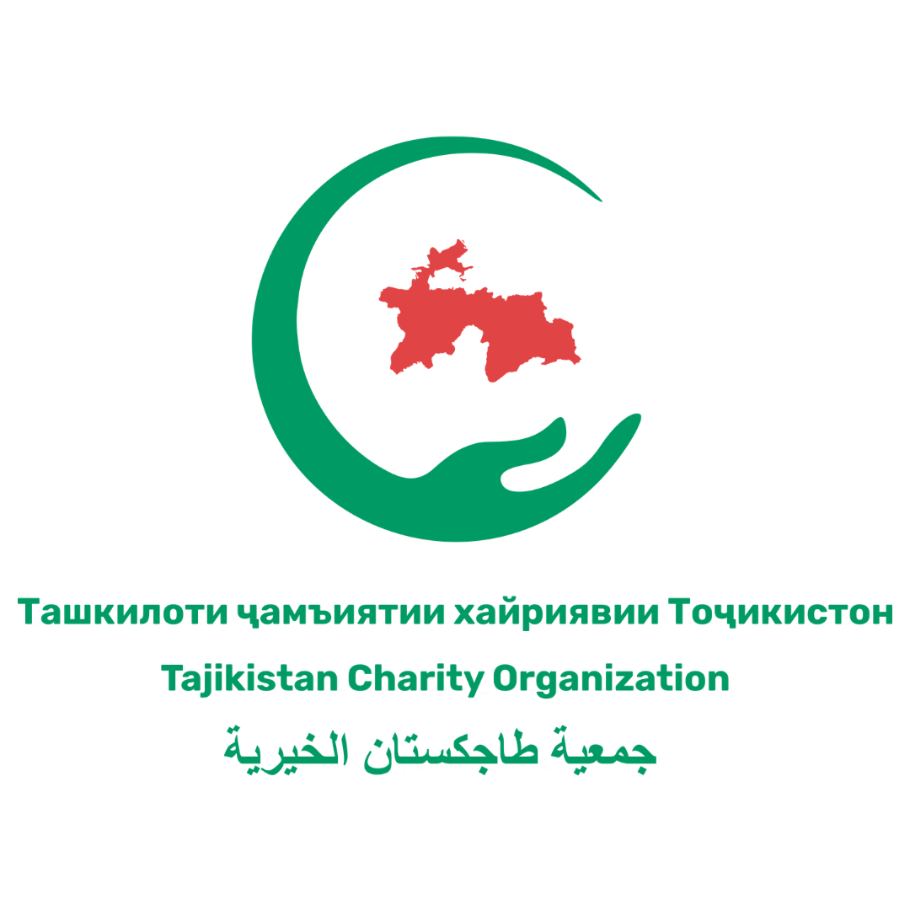

01 / الحكاية
كل بئر ليس مجرد مصدر للمياه، بل هو فصل جديد في حياة مجتمع بأكمله.
يحفظ هذا المعرض أجمل لحظات زيارتكم إلى طاجيكستان: اللقاءات، والابتسامات، وثمار العطاء التي رأيتموها بأعينكم.
شكراًمن القلب

بكل الامتنان لأصدقائنا من دولة الإمارات العربية المتحدة
زيارة واحدة، وقصص كثيرة. لحظات توثّق أثراً مستداماً في حياة الأسر والمجتمعات.
كل بئر ليس مجرد مصدر للمياه، بل هو فصل جديد في حياة مجتمع بأكمله.
يحفظ هذا المعرض أجمل لحظات زيارتكم إلى طاجيكستان: اللقاءات، والابتسامات، وثمار العطاء التي رأيتموها بأعينكم.
اختاروا موقعاً لفتح ألبوم الصور واستعادة تفاصيل الزيارة.
بكل التقدير والامتنان من فريق جمعية طاجيكستان الخيرية ومن الأسر المستفيدة في طاجيكستان.